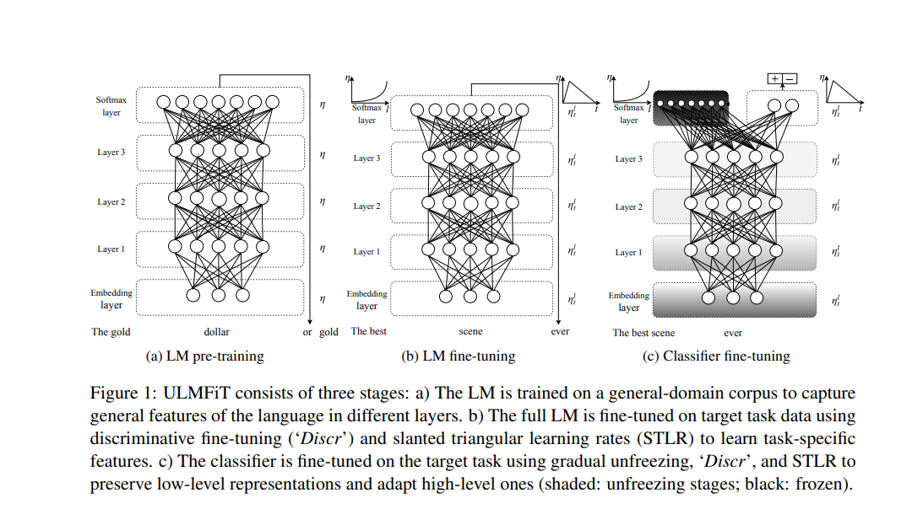

Finetuning a language model and training a classifier
In this notebook, our goal is to develop a machine learning model that can take in a patient’s symptoms as an input and return a list of the top 3 possible classes (diseases) alongside confidence values for each class expressed as probabilities.
We use 2 approaches here, first we quickly train a model to classifify text based on a pretrained model, then in the 2nd approach we take this a step further using an approach shown in the ULMFit Paper.
Defaulting to user installation because normal site-packages is not writeable
Requirement already satisfied: seaborn in /home/rubanza/.local/lib/python3.10/site-packages (0.13.2)
Requirement already satisfied: matplotlib!=3.6.1,>=3.4 in /home/rubanza/.local/lib/python3.10/site-packages (from seaborn) (3.10.0)
Requirement already satisfied: numpy!=1.24.0,>=1.20 in /home/rubanza/.local/lib/python3.10/site-packages (from seaborn) (2.2.6)
Requirement already satisfied: pandas>=1.2 in /home/rubanza/.local/lib/python3.10/site-packages (from seaborn) (2.2.3)
Requirement already satisfied: contourpy>=1.0.1 in /home/rubanza/.local/lib/python3.10/site-packages (from matplotlib!=3.6.1,>=3.4->seaborn) (1.3.1)
Requirement already satisfied: cycler>=0.10 in /home/rubanza/.local/lib/python3.10/site-packages (from matplotlib!=3.6.1,>=3.4->seaborn) (0.12.1)
Requirement already satisfied: pillow>=8 in /home/rubanza/.local/lib/python3.10/site-packages (from matplotlib!=3.6.1,>=3.4->seaborn) (11.1.0)
Requirement already satisfied: pyparsing>=2.3.1 in /usr/lib/python3/dist-packages (from matplotlib!=3.6.1,>=3.4->seaborn) (2.4.7)
Requirement already satisfied: python-dateutil>=2.7 in /home/rubanza/.local/lib/python3.10/site-packages (from matplotlib!=3.6.1,>=3.4->seaborn) (2.9.0.post0)
Requirement already satisfied: kiwisolver>=1.3.1 in /home/rubanza/.local/lib/python3.10/site-packages (from matplotlib!=3.6.1,>=3.4->seaborn) (1.4.8)
Requirement already satisfied: fonttools>=4.22.0 in /home/rubanza/.local/lib/python3.10/site-packages (from matplotlib!=3.6.1,>=3.4->seaborn) (4.55.3)
Requirement already satisfied: packaging>=20.0 in /home/rubanza/.local/lib/python3.10/site-packages (from matplotlib!=3.6.1,>=3.4->seaborn) (24.2)
Requirement already satisfied: pytz>=2020.1 in /home/rubanza/.local/lib/python3.10/site-packages (from pandas>=1.2->seaborn) (2024.2)
Requirement already satisfied: tzdata>=2022.7 in /home/rubanza/.local/lib/python3.10/site-packages (from pandas>=1.2->seaborn) (2024.2)
Requirement already satisfied: six>=1.5 in /usr/lib/python3/dist-packages (from python-dateutil>=2.7->matplotlib!=3.6.1,>=3.4->seaborn) (1.16.0)
Note: you may need to restart the kernel to use updated packages.
Defaulting to user installation because normal site-packages is not writeable
Requirement already satisfied: fastkaggle in /home/rubanza/.local/lib/python3.10/site-packages (0.0.8)
Requirement already satisfied: fastcore>=1.4.5 in /home/rubanza/.local/lib/python3.10/site-packages (from fastkaggle) (1.7.28)
Requirement already satisfied: kaggle in /home/rubanza/.local/lib/python3.10/site-packages (from fastkaggle) (1.7.4.2)
Requirement already satisfied: packaging in /home/rubanza/.local/lib/python3.10/site-packages (from fastcore>=1.4.5->fastkaggle) (24.2)
Requirement already satisfied: certifi>=14.05.14 in /home/rubanza/.local/lib/python3.10/site-packages (from kaggle->fastkaggle) (2024.12.14)
Requirement already satisfied: protobuf in /home/rubanza/.local/lib/python3.10/site-packages (from kaggle->fastkaggle) (5.29.2)
Requirement already satisfied: tqdm in /home/rubanza/.local/lib/python3.10/site-packages (from kaggle->fastkaggle) (4.67.1)
Requirement already satisfied: setuptools>=21.0.0 in /usr/lib/python3/dist-packages (from kaggle->fastkaggle) (59.6.0)
Requirement already satisfied: python-slugify in /home/rubanza/.local/lib/python3.10/site-packages (from kaggle->fastkaggle) (8.0.4)
Requirement already satisfied: six>=1.10 in /usr/lib/python3/dist-packages (from kaggle->fastkaggle) (1.16.0)
Requirement already satisfied: idna in /home/rubanza/.local/lib/python3.10/site-packages (from kaggle->fastkaggle) (3.10)
Requirement already satisfied: urllib3>=1.15.1 in /home/rubanza/.local/lib/python3.10/site-packages (from kaggle->fastkaggle) (2.3.0)
Requirement already satisfied: webencodings in /home/rubanza/.local/lib/python3.10/site-packages (from kaggle->fastkaggle) (0.5.1)
Requirement already satisfied: python-dateutil>=2.5.3 in /home/rubanza/.local/lib/python3.10/site-packages (from kaggle->fastkaggle) (2.9.0.post0)
Requirement already satisfied: text-unidecode in /home/rubanza/.local/lib/python3.10/site-packages (from kaggle->fastkaggle) (1.3)
Requirement already satisfied: bleach in /home/rubanza/.local/lib/python3.10/site-packages (from kaggle->fastkaggle) (6.2.0)
Requirement already satisfied: requests in /home/rubanza/.local/lib/python3.10/site-packages (from kaggle->fastkaggle) (2.32.3)
Requirement already satisfied: charset-normalizer in /home/rubanza/.local/lib/python3.10/site-packages (from kaggle->fastkaggle) (3.4.1)
Note: you may need to restart the kernel to use updated packages.
ERROR: pip's dependency resolver does not currently take into account all the packages that are installed. This behaviour is the source of the following dependency conflicts.
streamlit 1.41.1 requires tenacity<10,>=8.1.0, which is not installed.
Note: you may need to restart the kernel to use updated packages.
Defaulting to user installation because normal site-packages is not writeable
Requirement already satisfied: pip in /usr/lib/python3/dist-packages (22.0.2)
Collecting pip
Downloading pip-25.2-py3-none-any.whl (1.8 MB)
━━━━━━━━━━━━━━━━━━━━━━━━━━━━━━━━━━━━━━━━ 1.8/1.8 MB 4.9 MB/s eta 0:00:0000:0100:010m
Installing collected packages: pip
Successfully installed pip-25.2
Note: you may need to restart the kernel to use updated packages.
Defaulting to user installation because normal site-packages is not writeable
Requirement already satisfied: tqdm in /home/rubanza/.local/lib/python3.10/site-packages (4.67.1)
Note: you may need to restart the kernel to use updated packages.
Defaulting to user installation because normal site-packages is not writeable
Collecting kagglehub
Downloading kagglehub-0.3.13-py3-none-any.whl.metadata (38 kB)
Requirement already satisfied: packaging in /home/rubanza/.local/lib/python3.10/site-packages (from kagglehub) (24.2)
Requirement already satisfied: pyyaml in /usr/lib/python3/dist-packages (from kagglehub) (5.4.1)
Requirement already satisfied: requests in /home/rubanza/.local/lib/python3.10/site-packages (from kagglehub) (2.32.3)
Requirement already satisfied: tqdm in /home/rubanza/.local/lib/python3.10/site-packages (from kagglehub) (4.67.1)
Requirement already satisfied: charset-normalizer<4,>=2 in /home/rubanza/.local/lib/python3.10/site-packages (from requests->kagglehub) (3.4.1)
Requirement already satisfied: idna<4,>=2.5 in /home/rubanza/.local/lib/python3.10/site-packages (from requests->kagglehub) (3.10)
Requirement already satisfied: urllib3<3,>=1.21.1 in /home/rubanza/.local/lib/python3.10/site-packages (from requests->kagglehub) (2.3.0)
Requirement already satisfied: certifi>=2017.4.17 in /home/rubanza/.local/lib/python3.10/site-packages (from requests->kagglehub) (2024.12.14)
Downloading kagglehub-0.3.13-py3-none-any.whl (68 kB)
Installing collected packages: kagglehub
Successfully installed kagglehub-0.3.13
Note: you may need to restart the kernel to use updated packages.
import pandas as pdimport matplotlib.pyplot as pltimport seaborn as sns# import fastbook# fastbook.setup_book()# from fastbook import *from fastai.tabular.allimport*import numpy as npfrom numpy import randomfrom tqdm import tqdmfrom ipywidgets import interactfrom fastai.imports import*np.set_printoptions(linewidth=130)from fastai.text.allimport*from pathlib import Pathimport osimport warningsimport gcimport picklefrom joblib import dump, load
:::
Dataset
We use the dataset from here. This dataset contains 2 columns specifically text and label. Text represents the patient complaint / symptoms in natural language text, while label represents the disease diagnosis.
Warning: Looks like you're using an outdated `kagglehub` version (installed: 0.3.10), please consider upgrading to the latest version (0.3.11).
Path to dataset files: ('/teamspace/studios/this_studio/.cache/kagglehub/datasets/rubanzasilva/symptoms-disease-no-id/versions/1',)
I have been experiencing a skin rash on my arms, legs, and torso for the past few weeks. It is red, itchy, and covered in dry, scaly patches.
1
My skin has been peeling, especially on my knees, elbows, and scalp. This peeling is often accompanied by a burning or stinging sensation.
2
I have been experiencing joint pain in my fingers, wrists, and knees. The pain is often achy and throbbing, and it gets worse when I move my joints.
3
There is a silver like dusting on my skin, especially on my lower back and scalp. This dusting is made up of small scales that flake off easily when I scratch them.
4
My nails have small dents or pits in them, and they often feel inflammatory and tender to the touch. Even there are minor rashes on my arms.
sd_df
label
text
0
Psoriasis
I have been experiencing a skin rash on my arms, legs, and torso for the past few weeks. It is red, itchy, and covered in dry, scaly patches.
1
Psoriasis
My skin has been peeling, especially on my knees, elbows, and scalp. This peeling is often accompanied by a burning or stinging sensation.
2
Psoriasis
I have been experiencing joint pain in my fingers, wrists, and knees. The pain is often achy and throbbing, and it gets worse when I move my joints.
3
Psoriasis
There is a silver like dusting on my skin, especially on my lower back and scalp. This dusting is made up of small scales that flake off easily when I scratch them.
4
Psoriasis
My nails have small dents or pits in them, and they often feel inflammatory and tender to the touch. Even there are minor rashes on my arms.
...
...
...
1195
diabetes
I'm shaking and trembling all over. I've lost my sense of taste and smell, and I'm exhausted. I occasionally get palpitations or a speeding heart.
1196
diabetes
Particularly in the crevices of my skin, I have skin rashes and irritations. My skin bruises and cuts take a while to heal as well.
1197
diabetes
I regularly experience these intense urges and the want to urinate. I frequently feel drowsy and lost. I've also significantly lost my vision.
1198
diabetes
I have trouble breathing, especially outside. I start to feel hot and start to sweat. I frequently have urinary tract infections and yeast infections.
1199
diabetes
I constantly sneeze and have a dry cough. My infections don't seem to be healing, and I have palpitations. My throat does ache occasionally, but it usually gets better.
xxbos xxmaj i 've had this cough that 's been lingering for days and difficulty breathing . xxmaj my fever is xxunk - high , and xxmaj i 'm feeling so weak and tired . xxmaj i 've also been producing a lot of mucus when i cough , and it 's just been so overwhelming to deal with all of these symptoms . xxmaj i 'm getting so xxunk with all of this .
Bronchial Asthma
1
xxbos xxmaj i 've had a persistent cough for days , and i also have breathing problems . xxmaj i 'm so weak and exhausted , and my fever is through the roof . xxmaj it 's been very difficult to xxunk all of these symptoms , and xxmaj i 've also been coughing up a lot of mucus . xxmaj i 'm becoming so xxunk over everything .
Bronchial Asthma
2
xxbos xxmaj mom , xxmaj xxunk , xxmaj i 've been feeling really tired and weak lately , and xxmaj i 've had this cough that just wo n't go away . xxmaj it 's been hard for me to catch my breath , and my fever has been really high . xxmaj when i cough , xxmaj i 've been producing a lot of mucus .
Bronchial Asthma
3
xxbos xxmaj i 've been feeling really ill lately . xxmaj i 've had this persistent cough and difficulty breathing , and my fever has been off the xxunk . xxmaj i 'm also feeling extremely exhausted , and xxmaj i 've been producing a lot of mucus when i cough . xxmaj it 's just been so overwhelming to deal with all of these symptoms
Bronchial Asthma
4
xxbos xxmaj my eyes are red and watery all the time . xxmaj i 've also had this pressure in my sinuses that wo n't go away . xxmaj i 'm always feeling tired and xxmaj i 've been having a lot of trouble breathing . xxmaj i 've also had a lot of gunk in my throat and my lymph nodes are swollen .
Common Cold
5
xxbos xxmaj i 've been struggling with difficulty breathing , a constant cough , and fatigue . xxmaj my fever is extremely high , and xxmaj i 've been coughing up a lot of thick , mucoid sputum . xxmaj it 's been so hard to deal with all of this , and xxmaj i 'm just feeling so drained and worn out
Bronchial Asthma
6
xxbos xxmaj my eyes are always red and itchy , and my nose feels all stuffy and congested . i just feel kind of sick and tired all the time , and i keep coughing up all this gunk . xxmaj my throat feels sore and scratchy , and xxmaj i 've noticed that the bumps on my neck are xxunk than usual
Common Cold
7
xxbos xxmaj i 've been having a really hard time going to the bathroom lately . xxmaj it 's really painful and xxmaj i 'm only able to go every few days . xxmaj there 's also a lot of pain in my anus and around that area . xxmaj my stool has been really bloody and my anus feels really irritated .
Dimorphic Hemorrhoids
8
xxbos xxmaj i 've been having a tough time with this constant cough , difficulty breathing , and fatigue . xxmaj my fever is high , and xxmaj i 've been coughing up a lot of thick , mucoid sputum . xxmaj it 's all been rather xxunk and exhausting , and xxmaj i 'm feeling quite sick at the xxunk .
xxbos xxmaj i 've had this cough that 's been lingering for days and difficulty breathing . xxmaj my fever is xxunk - high , and xxmaj i 'm feeling so weak and tired . xxmaj i 've also been producing a lot of mucus when i cough , and it 's just been so overwhelming to deal with all of these symptoms . xxmaj i 'm getting so xxunk with all of this .
Bronchial Asthma
1
xxbos xxmaj i 've had a persistent cough for days , and i also have breathing problems . xxmaj i 'm so weak and exhausted , and my fever is through the roof . xxmaj it 's been very difficult to xxunk all of these symptoms , and xxmaj i 've also been coughing up a lot of mucus . xxmaj i 'm becoming so xxunk over everything .
Bronchial Asthma
Approach 2 - ULMFiT approach
In traditional text transfer learning, We use a pre-trained model called a language model. The model we are also going to use in this example was initially trained on Wikipedia on the task of guessing the next word. We then fine-tuned this model for our disease classification task based on symptoms. We can then use this model for our task of disease classification.
But the Wikipedia English might differ from medical jargon, so to further improve our model. We can employ a technique shown in the ULMFIT Paper by Jeremy Howard and Sebastian Ruder. They take the above a step further by fitting the pre-trained model on medical corpus and then using that as a base for our classifier. They noticed that adding this step of training the pretrained model on the task specific corpus gives better result as the model also has better context of the final task.

Model training process from the ULMTFIT Paper
Finetuning a language model with my medical corpus
Below I define a DataLoader which is an extension of PyTorch’s DataLoaders class, albeit with more functionality. This takes in our data, and prepares it as input for our model, passing it in batches etc.
The DataLoaders Object allows us to build data objects we can use for training without specifically changing the raw input data.
The dataloader then acts as input for our models. We also pass in valid_pct=0.2 which samples and uses 20% of our data for validation.
We then use show_batch to have a look at some of our data.Since, we are guessing the next word in a sentence, you will notice that the targets have shifted one word to thr right in the text_ column.
dls_lm.show_batch(max_n=5)
xxbos i have been experiencing a skin rash on my arms , legs , and torso for the past few weeks . xxmaj it is red , itchy , and covered in dry , xxunk patches . xxbos xxmaj i 've been having a lot of trouble going to the bathroom lately . xxmaj it 's been really painful and xxmaj i 've been experiencing pain in my anus . xxmaj my
there is a strong pain in my back and also behind my eyes . i have also noticed small red spots on my back and neck . xxbos i have a chronic dry cough . i have palpitations and my infections do n't appear to be getting better . i also have a painful throat xxunk , xxunk it does seem to go away . xxbos xxmaj recently , my muscles have
a lot of problems with my bowel motions recently . xxmaj it 's difficult to go , and it hurts when i do . xxmaj my anus is quite painful , and it has been bleeding whenever i go . xxmaj it 's excruciatingly painful , and xxmaj i 'm quite uneasy . xxbos xxmaj i 'm not in the mood to eat , and swallowing is difficult . i often have
xxunk . i lack energy , appetite , and frequently feel really exhausted . xxbos xxmaj in xxunk to frequent headaches and blurred vision , increased appetite , a stiff neck , anxiety , irritability , and visual disturbance , i have been having stomach problems , including indigestion and acidity . xxbos xxmaj i 've been really xxunk and ill . xxmaj i 've been suffering from a severe cough and
i 'm feeling rather ill . xxbos i have developed rashes on my body that are itchy and . i have lost my appetite and feel very tired all day . i feel something is wrong with my body . xxbos i have a tendency to burp and belch regularly . i often get chest discomfort that radiates to my arm , jaw , and neck . xxmaj my chest feels tight
i have been experiencing a skin rash on my arms , legs , and torso for the past few weeks . xxmaj it is red , itchy , and covered in dry , xxunk patches . xxbos xxmaj i 've been having a lot of trouble going to the bathroom lately . xxmaj it 's been really painful and xxmaj i 've been experiencing pain in my anus . xxmaj my stool
is a strong pain in my back and also behind my eyes . i have also noticed small red spots on my back and neck . xxbos i have a chronic dry cough . i have palpitations and my infections do n't appear to be getting better . i also have a painful throat xxunk , xxunk it does seem to go away . xxbos xxmaj recently , my muscles have felt
lot of problems with my bowel motions recently . xxmaj it 's difficult to go , and it hurts when i do . xxmaj my anus is quite painful , and it has been bleeding whenever i go . xxmaj it 's excruciatingly painful , and xxmaj i 'm quite uneasy . xxbos xxmaj i 'm not in the mood to eat , and swallowing is difficult . i often have this
. i lack energy , appetite , and frequently feel really exhausted . xxbos xxmaj in xxunk to frequent headaches and blurred vision , increased appetite , a stiff neck , anxiety , irritability , and visual disturbance , i have been having stomach problems , including indigestion and acidity . xxbos xxmaj i 've been really xxunk and ill . xxmaj i 've been suffering from a severe cough and sore
'm feeling rather ill . xxbos i have developed rashes on my body that are itchy and . i have lost my appetite and feel very tired all day . i feel something is wrong with my body . xxbos i have a tendency to burp and belch regularly . i often get chest discomfort that radiates to my arm , jaw , and neck . xxmaj my chest feels tight and
From the above, we notice that the texts were processed and split into tokens. It adds some special tokens like xxbos to indicate the beginning of a text and xxmaj to indicate the next word was capitalised.
We then define a fastai learner, which is a fastai class that we can use to handle the training loop. It bundles the essential components needed for training together such as the data, model, the dataloaders, loss functions
We use the AWD LSTM architecture. We are also going to use accuracy and perplexity (the Exponential of the loss) as our metrics for this example. Furthermore, we also set a weight decay (wd) of 0.1 and apply mixed precision (.to_fp16()) to the learner, which speeds up training on GPU’S with tensor cores.
A pre-trained model is one that has already been trained on a large dataset and has learnt general patterns and features in a dataset, which can then be used to fine-tune to a specific task.
By default, the body of the model is frozen, meaning we won’t be updating the parameters of the body during training. For this case, only the head (first few layers) of the model will train.
learn.fit_one_cycle(1, 1e-2)
epoch
train_loss
valid_loss
accuracy
perplexity
time
0
4.302689
3.632804
0.342332
37.818718
00:02
As shown below, we can use the learn.save to save the state of our model to a file in learn.path/models/ named “filename.pth”. You can use learn.load(‘filename’) to load the content of this file.
After training the head of the model, we unfreeze the rest of the body and finetune it alongside the head, except for our final layer, which converts activations into probabilities of picking each token in our vocabulary.
learn.unfreeze()learn.fit_one_cycle(5, 1e-3)
epoch
train_loss
valid_loss
accuracy
perplexity
time
0
3.587642
2.953272
0.398495
19.168573
00:01
1
3.262225
2.604236
0.434433
13.520896
00:01
2
3.005299
2.404017
0.464337
11.067551
00:01
3
2.831740
2.315215
0.482234
10.127099
00:01
4
2.708957
2.295945
0.486777
9.933821
00:01
The model not including the final layers is called an encoder. We use fastai’s save_encoder to save it as shown below.
Save the model
# Now save the modellearn.save_encoder('finetuned')
Now, that our model has been trained to guess or generate the next word in a sentence, we can use it to create or generate new user inputs that start with the below user input text.
TEXT ="I have running nose, stomach and joint pains"N_WORDS =40N_SENTENCES =2preds = [learn.predict(TEXT, N_WORDS, temperature=0.75) for _ inrange(N_SENTENCES)]
:::
print("\n".join(preds))
i have running nose , stomach and joint pains . My skin is red , and my skin has been really weird . I radiates a lot of diarrhea and suddenly developed a rash on my face . I mucous . It 's been
i have running nose , stomach and joint pains . My eyes become yellow and I brain sweating . I 've had a high fever , a high fever , and intense fever . I 've been experiencing a lot of back pain
Training a text classifier
We now gather and pass in data to train our text classifier.
I have been experiencing a skin rash on my arms, legs, and torso for the past few weeks. It is red, itchy, and covered in dry, scaly patches.
1
Psoriasis
My skin has been peeling, especially on my knees, elbows, and scalp. This peeling is often accompanied by a burning or stinging sensation.
2
Psoriasis
I have been experiencing joint pain in my fingers, wrists, and knees. The pain is often achy and throbbing, and it gets worse when I move my joints.
3
Psoriasis
There is a silver like dusting on my skin, especially on my lower back and scalp. This dusting is made up of small scales that flake off easily when I scratch them.
4
Psoriasis
My nails have small dents or pits in them, and they often feel inflammatory and tender to the touch. Even there are minor rashes on my arms.
# Check for NaN values in the label columnprint(sd_df['label'].isna().sum())# If there are NaNs, you can drop those rows#df = df.dropna(subset=['label'])
Passing in text_vocab=dls_lm.vocab passes in our previously defined vocabulary to our classifier.
To quote the fastai documentation, we have to use the exact same vocabulary as when we were fine-tuning our language model, or the weights learned won’t make any sense.
When you train a language model, it learns to associate specific patterns of numbers (weights) with specific tokens (words or subwords) in your vocabulary.
Each token is assigned a unique index in the vocabulary, and the model’s internal representations (the weights in the embedding layers and beyond) are organised according to these indices.
Think of it like a dictionary where each word has a specific page number. The model learns that information about “good” is on page 382, information about “movie” is on page 1593, and so on. These “page numbers” (indices) must remain consistent for the weights to make sense.
If you were to use a different vocabulary when creating your classifier: .The token “good” might now be on page 746 instead of 382 .The weights the model learned during language model training were specifically tied to the old index (382)
Now when the classifier sees “good” and looks up page 746, it finds weights that were meant for some completely different word
This mismatch would render the carefully fine-tuned language model weights essentially random from the perspective of the classifier.
Discriminative learning rates means using different learning rates for different layers of the model.
For example, earlier layers (closer to the input) might get smaller learning rates, while the later layers (closer to the output) get larger learning rates.
Gradual unfreezing is a technique where layers of the model are unfrozen (made trainable) incrementally during fine-tuning. Instead of unfreezing all layers at once, you start by unfreezing only the topmost layers (closest to the output) and train them first.
Unlike computer vision applications where we unfreeze the model at once, gradual unfreezing has been shown to improve performance for NLP models.
def get_top_3_predictions(text, learn):# Get prediction and probabilities _, _, probs = learn.predict(text)# Get the disease labels vocabulary (second list in vocab) disease_vocab = learn.dls.vocab[1] # Access the disease labels# Get number of classes n_classes =len(disease_vocab)# Get indices of top 3 (or fewer) probabilities n_preds =min(3, n_classes) top_k_indices = probs.argsort(descending=True)[:n_preds]# Get the actual labels and their probabilities predictions = []for idx in top_k_indices: label = disease_vocab[int(idx)] probability =float(probs[idx]) predictions.append((label, probability))return predictions# Function to format and display the predictions nicelydef display_predictions(predictions):for i, (disease, prob) inenumerate(predictions, 1):print(f"{i}. {disease}: {prob:.3f}")
test_text ="I am having a running stomach, fever, general body weakness and have been getting bitten by mosquitoes often"predictions = get_top_3_predictions(test_text, learn)print("\nTop 3 Predictions:")display_predictions(predictions)
The code below allows us to pass in our patient complaints in a batch as shown in the examples below.
def get_top_3_predictions(texts, learn):""" Get top 3 predictions for a single text or list of texts Args: texts: Either a single string or a list of strings learn: A trained fastai learner for text classification Returns: For a single text: List of (label, probability) tuples For multiple texts: List of lists of (label, probability) tuples """# Handle both single text and list of texts is_single =isinstance(texts, str)if is_single: texts = [texts] disease_vocab = learn.dls.vocab[1] n_classes =len(disease_vocab)# Try to use DataLoader for batch prediction if model supports ittry:# This is more efficient but might not work with all models preds = learn.get_preds(dl=learn.dls.test_dl(texts)) probs_list = preds[0] # Tensor of shape [batch_size, n_classes] all_predictions = []for probs in probs_list: n_preds =min(3, n_classes) top_k_indices = probs.argsort(descending=True)[:n_preds] predictions = []for idx in top_k_indices: label = disease_vocab[int(idx)] probability =float(probs[idx]) predictions.append((label, probability)) all_predictions.append(predictions)exceptException:# Fall back to individual prediction if batch method fails all_predictions = []for text in texts: _, _, probs = learn.predict(text) n_preds =min(3, n_classes) top_k_indices = probs.argsort(descending=True)[:n_preds] predictions = []for idx in top_k_indices: label = disease_vocab[int(idx)] probability =float(probs[idx]) predictions.append((label, probability)) all_predictions.append(predictions)return all_predictions[0] if is_single else all_predictionsdef display_predictions(predictions, texts=None):""" Display formatted predictions Args: predictions: Either a list of (label, prob) tuples or a list of such lists texts: Optional list of input texts to display with predictions """# If predictions is a list of (label, prob) tuples (single text case)ifisinstance(predictions[0], tuple):for i, (disease, prob) inenumerate(predictions, 1):print(f"{i}. {disease}: {prob:.3f}")# If predictions is a list of lists (batch case)else:for i, preds inenumerate(predictions):if texts:print(f"\nText: {texts[i][:50]}...")else:print(f"\nSample #{i+1}:")for j, (disease, prob) inenumerate(preds, 1):print(f" {j}. {disease}: {prob:.3f}")
# Assuming 'learn' is your trained FastAI model# Example 1: Single inputsingle_text ="Patient presents with persistent cough, fever of 101°F for 5 days, and fatigue."single_result = get_top_3_predictions(single_text, learn)print("SINGLE TEXT PREDICTION:")print(f"Input: {single_text}")print("Top 3 predictions:")display_predictions(single_result)# Example 2: Batch input (small batch)batch_texts = ["Patient presents with persistent cough, fever of 101°F for 5 days, and fatigue.","7-year-old with red, itchy rash on face and arms, started 2 days after camping trip.","Adult male with sudden onset of severe headache, described as 'worst headache of my life'.","Patient reports joint pain in fingers and wrists, worse in the morning, accompanied by stiffness."]batch_results = get_top_3_predictions(batch_texts, learn)print("\nBATCH PREDICTION EXAMPLE:")display_predictions(batch_results, batch_texts)# Example 3: Processing a medium-sized datasetmedium_dataset = [f"Patient {i}: Symptoms include {symptom}"for i, symptom inenumerate(["fever and sore throat","chest pain radiating to left arm","swollen lymph nodes and night sweats","difficulty breathing and wheezing","abdominal pain and vomiting","frequent urination and excessive thirst","joint pain and morning stiffness","persistent headache and blurred vision","unexplained weight loss and fatigue","skin rash and itching" ] *3) # Repeat symptoms to create 30 samples]print("\nPROCESSING MEDIUM DATASET:")medium_results = get_top_3_predictions(medium_dataset, learn)# Display first 3 results only for brevityprint("First 3 results from medium dataset:")display_predictions(medium_results[:3], medium_dataset[:3])# Example 4: Working with DataFrame data# This example demonstrates how you might use the function with pandas DataFrameimport pandas as pd# Create a sample DataFramedf = pd.DataFrame({'patient_id': range(1001, 1006),'age': [45, 12, 67, 32, 54],'gender': ['M', 'F', 'M', 'F', 'M'],'symptoms': ["Persistent dry cough and fever for 3 days","Skin rash with small fluid-filled blisters, mild fever","Shortness of breath, chest tightness, wheezing when exercising","Severe migraine, sensitivity to light, nausea","Pain and swelling in the right knee, difficulty walking" ]})print("\nPROCESSING DATAFRAME:")print("Sample DataFrame:")print(df[['patient_id', 'symptoms']].head())# Process the symptoms columndf_results = get_top_3_predictions(df['symptoms'].tolist(), learn)# Add predictions back to the DataFramedf['top_prediction'] = [pred[0][0] for pred in df_results] # First prediction labeldf['confidence'] = [pred[0][1] for pred in df_results] # First prediction probabilityprint("\nDataFrame with predictions:")print(df[['patient_id', 'symptoms', 'top_prediction', 'confidence']])
0.00% [0/1 00:00<?]
SINGLE TEXT PREDICTION:
Input: Patient presents with persistent cough, fever of 101°F for 5 days, and fatigue.
Top 3 predictions:
1. Migraine: 0.236
2. Malaria: 0.161
3. Pneumonia: 0.141
BATCH PREDICTION EXAMPLE:
Text: Patient presents with persistent cough, fever of 1...
1. Migraine: 0.236
2. Malaria: 0.161
3. Pneumonia: 0.141
Text: 7-year-old with red, itchy rash on face and arms, ...
1. Impetigo: 0.670
2. Psoriasis: 0.082
3. Fungal infection: 0.041
Text: Adult male with sudden onset of severe headache, d...
1. Dengue: 0.341
2. Pneumonia: 0.108
3. Malaria: 0.089
Text: Patient reports joint pain in fingers and wrists, ...
1. Dengue: 0.264
2. Psoriasis: 0.197
3. Varicose Veins: 0.109
PROCESSING MEDIUM DATASET:
First 3 results from medium dataset:
Text: Patient 0: Symptoms include fever and sore throat...
1. urinary tract infection: 0.128
2. Common Cold: 0.113
3. Jaundice: 0.093
Text: Patient 1: Symptoms include chest pain radiating t...
1. Jaundice: 0.210
2. Malaria: 0.121
3. Hypertension: 0.071
Text: Patient 2: Symptoms include swollen lymph nodes an...
1. Impetigo: 0.245
2. urinary tract infection: 0.116
3. Jaundice: 0.073
PROCESSING DATAFRAME:
Sample DataFrame:
patient_id symptoms
0 1001 Persistent dry cough and fever for 3 days
1 1002 Skin rash with small fluid-filled blisters, mild fever
2 1003 Shortness of breath, chest tightness, wheezing when exercising
3 1004 Severe migraine, sensitivity to light, nausea
4 1005 Pain and swelling in the right knee, difficulty walking
DataFrame with predictions:
patient_id symptoms \
0 1001 Persistent dry cough and fever for 3 days
1 1002 Skin rash with small fluid-filled blisters, mild fever
2 1003 Shortness of breath, chest tightness, wheezing when exercising
3 1004 Severe migraine, sensitivity to light, nausea
4 1005 Pain and swelling in the right knee, difficulty walking
top_prediction confidence
0 Bronchial Asthma 0.170556
1 Impetigo 0.312419
2 Pneumonia 0.266389
3 Malaria 0.158541
4 Arthritis 0.197566
In this project, we successfully developed a language model that can analyze patient-reported complaints and generate differential diagnoses with associated confidence scores. Our approach leveraged the 3 step method shown in the ULMFiT paper, to create an effective differential diagnostic aid.
Key Accomplishments
Language Model Fine-Tuning: We took a pre-trained AWD-LSTM language model originally trained on the whole of Wikipedia.We then further finetuned it on a corpus of medical symptom descriptions, adapting it to the specific vocabulary and patterns found in clinical text.
Classifier Development: Using the above fine-tuned model, we built a text classifier capable of categorizing symptom descriptions into potential diagnoses with probability estimates for each condition.
Practical Output Format: The model provides the top 3 most likely diagnoses for any given symptom description along with confidence scores.
Results and Performance
We hope to build a model that shows state of the art accuracy on the test dataset and demonstrates strong capability in mapping symptom descriptions to appropriate diagnoses in practice where it can do
Effective recognition of key symptoms in natural language descriptions
Reasonable association of symptom patterns with relevant conditions
Appropriate confidence distribution across potential diagnoses
Limitations and Next Steps
While the current implementation shows promise, several areas for improvement were identified:
Expanded Medical Corpus: Incorporating Ugandan clinical guidelines and more diverse medical literature could further improve the model’s understanding of medical terminology.
Architecture Upgrades: Transitioning from LSTM-based models to transformer architectures could potentially enhance performance.
Reasoning Capabilities: Adding explicit reasoning components would help explain diagnostic suggestions and improve clinical utility.
RAG Implementation: Retrieval-augmented generation could provide more context-aware and evidence-based diagnostic suggestions.
Custom Medical Model Fine-tuning: We can further try out finetuning our own model which we can then use as a base model for our classifier.
Deploying the model to an API endpoint, Adding a UI: Deploying the model then building a UI for end user interaction.
This work represents a foundation for aided differential diagnosis, with the potential to serve as a clinical decision support tool that helps healthcare providers consider a broader range of possible diagnoses based on patient-reported symptoms.